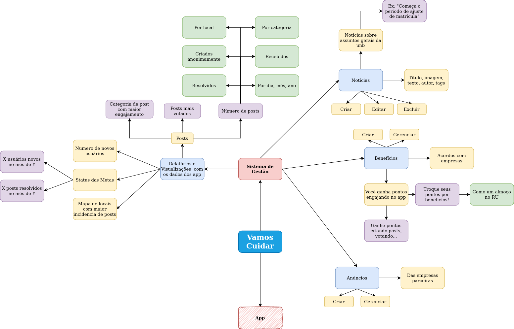

Engenharia de Requisitos
Histórico de Revisão
| Data | Versão | Descrição | Autor(es) |
|---|---|---|---|
| 09/09/2020 | 0.1 | Criação do Documento e Elicitação Adicionada | Guilherme |
| 10/09/2020 | 0.2 | Adição do Backlog do Produto | Guilherme |
Sumário
- Introdução
- Elicitação
- 2.1 Brainstorm
- 2.2 Introspecção
- 2.3 Requisitos
- Product Backlog
- 3.1 Épicos
- 3.2 Histórias de Usuário
- 3.3 Critérios de Aceitação
1. Introdução
A fase de levantamento de requisitos, em um projeto, representa a parte de negócio, ou seja, O QUE exatamente o cliente está precisando. Nessa fase, buscamos informações como: funcionalidades que o sistema deve ter, as regras de negócio dessas funcionalidades, restrições, usabilidade do software, e assim por diante. Neste documento vamos iniciar na fase de elicitação, modelagem e criação do backlog do produto.
2. Elicitação
O termo elicitar significa definir, tornar explicito, obter o máximo de informação sobre o objeto em questão. Nessa atividade precisamos ser cuidadosos, tudo é orientado à satisfação do cliente, então temos que aprender a entender o cliente, seu conhecimento e suas reais necessidades. O tripé da elicitação é identificação de fontes de informação, coleta de fatos e comunicação.
As técnicas de elicitação empregadas pelo grupo foram brainstorming e instrospecção.
2.1 Brainstorm
Brainstorming é a técnica de elicitação de novas e velhas ideias sobre determinado dominio para gerar soluções e ou levantar requisitos sobre o assunto. O tema do Brainstorming foi o de visão geral das funcionalidades do projeto
2.1.1 Mapa Mental das funcionalidades do Vamos Cuidar

2.2 Introspecção
A instrospecção é uma técnica muito rica e profunda. Consiste em entender quais propriedades o sistema deve possuir para que seja um sucesso. Demanda o Engenheiro de Requisitos imaginar o que ele gostaria, se ele tivesse que desempenhar uma dada tarefa, com os equipamentos disponiveis e demais recursos.
Decidimos fazer a instrospecção nos colocando no papel do funcionário do DAF que ficará responsável por analisar os relatórios do App do Vamos Cuidar e inserir noticias, gerencias anuncios e beneficios.
2.3. Requisitos
Requisitos funcionais e não funcionais elicitados por meio das técnicas acima.
2.3.1 Requisitos Funcionais
| ID | Requisito |
|---|---|
| RF001 | A aplicação deve permitir que o usuário efetue o login mediante suas credênciais. |
| RF002 | A aplicação deve permitir que permitir que o usuário navegue por meio do meun lateral. |
| RF003 | A aplicação deve permitir que o usuário visualize o relatório geral. |
| RF004 | A aplicação deve permitir que o usuário visualize o relatório por área |
| RF005 | A aplicação deve permitir que o usuário visualize o relatório por dia |
| RF006 | A aplicação deve permitir que o usuário visualize o relatório por localização |
| RF008 | A aplicação deve permitir que o usuário visualize posts mais votados |
| RF009 | A aplicação deve permitir que o usuário visualize categorias mais apoiadas |
| RF010 | A aplicação deve permitir que o usuário visualize o número de posts por intervalos de tempo |
| RF012 | A aplicação deve permitir que o usuário visualize o número de posts por categoria |
| RF013 | A aplicação deve permitir que o usuário visualize o número de posts criados |
| RF014 | A aplicação deve permitir que o usuário visualize o número de posts criados anonimamente |
| RF015 | A aplicação deve permitir que o usuário visualize o número de posts resolvidos |
| RF016 | A aplicação deve permitir que o usuário visualize o número de novos usuários |
| RF017 | A aplicação deve permitir que o usuário visualize o status das metas |
| RF018 | A aplicação deve permitir que o usuário visualize o uso do App por intervalos de tempo |
| RF019 | A aplicação deve permitir que o usuário visualize os posts com ocorrências semelhantes |
| RF020 | A aplicação deve permitir que o usuário crie notícias |
| RF021 | A aplicação deve permitir que o usuário edite notícias |
| RF022 | A aplicação deve permitir que o usuário delete notícias |
| RF023 | A aplicação deve permitir que o usuário liste notícias |
| RF024 | A aplicação deve permitir que o usuário crie benefícios |
| RF025 | A aplicação deve permitir que o usuário delete benefícios |
| RF026 | A aplicação deve permitir que o usuário crie anúncios |
| RF027 | A aplicação deve permitir que o usuário delete anúncios |
| RF028 | A aplicação tem que permitir que o usuário entre nela apenas se efetuar o login. |
| RF029 | A aplicação tem que guardar as informações de login do usuário. |
| RF030 | O usuário deve criar uma notícia com titulo, texto, imagem e tags. |
| RF031 | O usuário deve criar um benefício com titulo, nome da empresa e custo de pontos. |
2.3.2 Requisitos Não Funcionais
| ID | Requisito |
|---|---|
| RNF001 | A aplicação deve armazenar com segurança os dados de login do usuário. |
| RNF002 | A aplicação deve ter boa usabilidade e tempo rápido de resposta. |
3. Product Backlog
3.1 Épicos
EP01: Documentação do Projeto
Documentação cobrada pela disciplina desenvolvimento no decorrer do projeto. Envolve artefatos de processos de gestão de projeto como PMBOK, RUP e SCRUM.
EP02: Login & Navegação
Funcionalidades da aplicação ligadas á login & navegação.
EP03: Relatórios & Visualizações
Funcionalidades da aplicação ligadas á aba de relatórios e as visualizações, que são carregadas pelos dados do aplicativo que está sendo desenvolvido pelo outro grupo de MDS.
EP04: Gestão de elementos do App
Funcionalidades da aplicação ligadas à elementos do aplicativo mobile que está sendo desenvolvido pelo outro grupo de MDS, essas funcionalidades estão ligadas às abas de notícias, benefícios e anúncios.
3.2 Histórias de Usuário
| Épico | ID | Eu, como | Desejo | Para que eu possa |
|---|---|---|---|---|
| EP01 | US001 | Membro da equipe | Elaborar o Documento de visão | Ter uma noção melhor do produto. |
| EP01 | US002 | Membro da equipe | Elaborar o Planejamento/Comunicação Interna e Externa | Melhorara a organização da equipe. |
| EP01 | US003 | Membro da equipe | Elaborar o Documento de Arquitetura do Projeto | Definir a arquitetura da aplicação. |
| EP01 | US004 | Membro da equipe | Especificar as historias de usuários | Dividir as tarefas de implementação da aplicação. |
| EP01 | US005 | Membro da equipe | Configurar o reposítorio | Se adequar aos padrões da comunidade open source. |
| EP01 | US006 | Membro da equipe | Protótipo de baixa e alta fidelidade | Ter uma noção mais concreta das telas da aplicação. |
| EP01 | US007 | Membro da equipe | Elobrar o documento Roadmap | Visualizar as etapas do projeto por tempo. |
| EP01 | US008 | Membro da equipe | Elaborar o documento EAP | Dividir o projeto em partes menores, mais gerenciáveis. |
| EP01 | US009 | Membro da equipe | Elaborar o documento EVM | Quantificar o projeto financeiramente. |
| EP02 | US010 | Usuário | Realizar o login | Acessar as funcionalidades da aplicação. |
| EP02 | US011 | Usuário | Navegar pelo menu lateral | Transitar pelas diferentes páginas da aplicação. |
| EP03 | US012 | Usuário | Visualizar a seção de relatório geral | Ter um entendimento dos dados sem filtros |
| EP03 | US013 | Usuário | Visualizar a seção de relatório por área | Ter um entendimento dos dados por área |
| EP03 | US016 | Usuário | Visualizar a seção de relatório diário | Ter um entendimento dos dados por dia |
| EP03 | US018 | Usuário | Visualizar a seção de relatório por localização | Ter um entendimento dos dados por localização |
| EP03 | US019 | Usuário | Visualizar os posts mais votados | Saber quais são os posts mais populares |
| EP03 | US020 | Usuário | Visualizar as categorias mais votadas | Saber quais são as categorias mais populares |
| EP03 | US021 | Usuário | Visualizar o número de posts por intervalos de tempo | Entender a distribuição dos posts em um intervalo |
| EP03 | US022 | Usuário | Visualizar o número de posts por categoria | Entender a distribuição de dados por categoria |
| EP03 | US023 | Usuário | Visualizar o número de posts criados | Ver o total de posts criados na aplicação |
| EP03 | US024 | Usuário | Visualizar o número de posts criados anonimamente | Ver o total de posts criados anonimamente na aplicação |
| EP03 | US025 | Usuário | Visualizar o número de posts resolvidos | Entender se o App está contribuindo para um ambiente melhor |
| EP03 | US026 | Usuário | Visualizar o número de novos usuários | Entender melhor o acolhimento do app pela comunidade |
| EP03 | US027 | Usuário | Visualizar o uso do app por intervalo de tempo | Entender em quais momentos o app está sendo mais usado |
| EP03 | US028 | Usuário | Visualizar os posts com ocorrências semelhantes | Entender que tipo de ocorrências são mais registradas. |
| EP04 | US029 | Usuário | Criar notícias | Compartilhar informações com os usuários do app. |
| EP04 | US030 | Usuário | Editar notícias | Corrigir informações na notícia. |
| EP04 | US031 | Usuário | Excluir notícias | Retirar a nóticia do app. |
| EP04 | US032 | Usuário | Listar notícias | Ter uma visão geral de todas as notícias. |
| EP04 | US033 | Usuário | Criar benefícios | Apresentar benefícios aos usuários do app. |
| EP04 | US034 | Usuário | Excluir benefícios | Retirar benefícios do app. |
| EP04 | US035 | Usuário | Criar Anúncios | Mostrar esses anúncios aos usuários do app. |
| EP04 | US036 | Usuário | Excluir Anúncios | Retirar os anúncios do app. |
3.3 Critérios de aceitação
Definir especificidades, como qual tipo de gráfico utilizar.